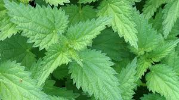

Dandelion

The leaves are used to stimulate the appetite and help digestion. Dandelion flower has antioxidant properties. Dandelion may also help improve the immune system. Herbalists use dandelion root to detoxify the liver and gallbladder, and dandelion leaves to help kidney function.Dandelions contain beta-carotene, which is an antioxidant that helps protect cells from damage. Research shows that carotenoids such as beta-carotene play a vital role in reducing cell damage. The flower of the dandelion is also full of flavonoids and polyphenols, which are other types of antioxidants. Dandelions have amazing skin care benefits: They're rich in antioxidants, have anti-aging qualities, and can help protect the skin against UV damage. Dandelions may get overlooked for more trendy or exotic herbs, but this humble weed has incredible therapeutic benefits and, best of all, they're completely free.
Dandelion greens turn bitter and woody quite quickly, so very early spring is the best time to harvest them. To harvest and eat dandelions, try to clip the small leaves from the plant before the plant flowers.
Clover

Health care practitioners believe that red clover "purified" the blood by acting as a diuretic (helping the body get rid of excess fluid) and expectorant (helping clear lungs of mucous), improving circulation, and helping cleanse the liver.Lowers blood pressure: Red clover has special benefits that include lowering inflammation across the body, especially in the cardiovascular system. According to numerous studies, red clover tea can greatly decrease the tension in the arteries and blood vessels, which helps lower blood pressure.Considering red clover is generally safe for most people and may work relatively quickly — potentially leading to positive changes in libido, mood, sleep, skin and bone health within several months of use— it's worth a try.
The first harvest of red clover should be made when the field is at early bloom. Later cuttings can be made at late bud or early bloom. During hot and dry weather, red clover growth slows down and flowering may occur on short, stunted plants.
Aloe
Aloe vera is commonly known as a topical gel used to treat sunburn. Promisingly, it may also provide other health benefits, largely due to its antioxidant properties. Preliminary research has indicated that aloe vera may benefit your skin, dental, oral, and digestive health. It may even improve blood sugar control. The Aloe vera plant has been used for thousands of years to heal a variety of conditions, most notably burns, wounds, skin irritations, and constipation.
For growing aloe indoors, place in bright, indirect sunlight. For growing outdoors, ensure aloe is lightly shaded to protect it during the hottest times of the day. Covered patios and porches are great places to grow aloe during warm seasons. Plant in fast-draining Miracle-Gro Cactus, Palm & Citrus Potting Mix. The ingredients of the gel-like plant juice have a widely proven positive effect on our skin. If you want to harvest Aloe vera, it is best to use two- to three-year-old plants and cut the leaves at the base of the stems with a clean, sharp knife.
Nettles
General Uses. Stinging nettle has been used for hundreds of years to treat painful muscles and joints, eczema, arthritis, gout, and anemia. Today, many people use it to treat urinary problems during the early stages of an enlarged prostate. It's also great for scalp. Just boil them, and use as part of your shampooing routine (but make sure it's no longer boiling hot). Natural herbs for women like Nettle leaf or stinging nettle can optimize and balance hormones for optimal health, giving you great skin and hair as well. Stinging Nettle or Nettle leaf is a common plant, its leaves can cause itching and a temporary discomfort hence earning it a lot of bad press. This tea is great for new mothers, to improve milk supply for their infants, but should avoid during pregnancy, as it may cause uterus to contract. It's rich in vitamin C.
Nettles are definitely the best in spring when they are young and tender. Cut them early on as soon as they get 6 or 8-inches tall; this is a perfect spring tonic and delicious, nutritious food. Then harvest them a second time in late spring–most sources recommend harvesting only the tops which are the most tender.